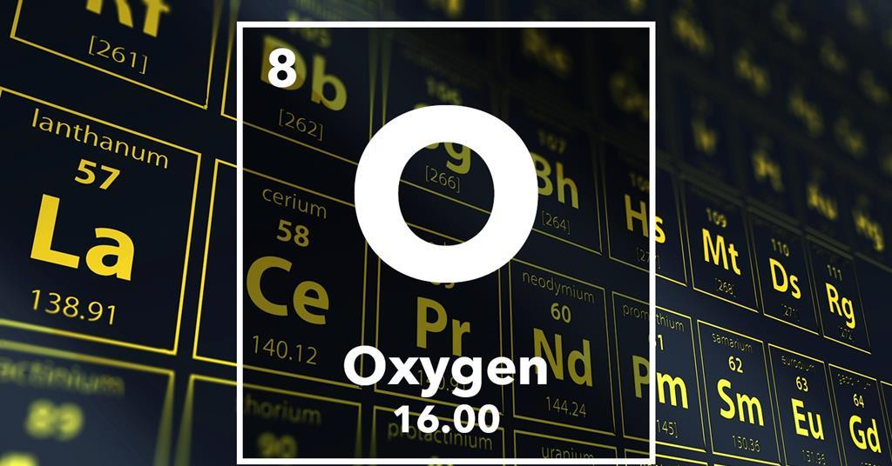

OXYGEN

PROPERTIES
Oxygen . The name of the element is derived from the Latin words oxy and genes, meaning «acid forming» . Oxygen is the most abundant element in the Earth's crust , the second most abundant element in the atmosphere , and the third most abundant element in the universe . Oxygen forms compounds with all of the other element except for the lighter noble gases.
It is found in many mineral ores, in the form of oxides , sulfates , nitrates , phosphates , carbonates , silica and quartz and the silicates, etc. In the atmosphere, it is found in its elemental form, which is a diatomic molecule, O2, consisting of two atoms of oxygen joined by a double bond. When cooled to a temperature of -183C, oxygen forms a pale blue liquid, which is attracted to the poles of a very strong magnet. The burning of fuels in the presence of molecular oxygen is where we get a lot of our electricity, and how we power automobiles. The hydrocarbons in petroleum and its refined products such as natural gas, gasoline, and diesel fuel, undergo combustion with oxygen to product carbon dioxide, water, and a great deal of energy.
The burning of coal to produce carbon dioxide also produces energy. Even iron, which does not burn in 21% oxygen, will burn in 100% oxygen . The capsules used in the Mercury, Gemini, and Apollo program operated in space with an atmosphere of pure oxygen at a pressure of 5 psi. Since the spacecraft were to operate in a pure oxygen environment in space, they were tested on the ground in a pure oxygen environment.
Oxygen is used in welding to generate the intense heat needed to cut and weld steel and other high-melting point metals. It is used in hospitals to supply oxygen to patients who have difficulty breathing. The discovery of oxygen is an extremely tangled story, partially because of questions of priority, and partially because of misunderstandings about the nature of combustion and the gas phase. For thousands of years, air was considered to be an «element,» and it was not recognized that air was actually a mixture of many different gases.
When nitrogen was discovered in 1772, it was referred to as «phlogisticated air,» since an atmosphere of pure nitrogen did not support combustion. Oxygen was discovered by the Swedish chemist Carl Wilhelm Scheele in 1772, but his account of his experiment was not published until 1777. The English chemist Joseph Priestley produced oxygen in 1774 by heating a sample of merucry oxide, HgO, and collecting the oxygen gas it produced over water. He called the gas «dephlogisticated air,» since it supported combustion more vigorously that «normal» air, and therefore presumably was more capable of «pulling» phlogiston out of other substances.
The French chemist Antoine Lavoisier claimed to have produced oxygen in 1774, independently of Priestley, but Priestley had visited him a few months before and told him of his experiment. Ozone is a powerful oxidizing agent, and is often used to kill bacteria during the purification of water. At sea level, ozone in the atmosphere is a pollutant, produced by the action of sunlight on nitrogen oxides in car exhaust. In the stratosphere, at an elevation of 10 to 50 km about the surface of the Earth, ozone is produced by the action of sunlight upon O2, which splits apart into atomic oxygen, O, and combines with another O2 molecule to form ozone, O3.
The ozone absorbs high-energy ultraviolet light, splitting apart into O2 and O, which can then recombine and absorb another photon of high-energy light. This ozone layer forms a shield which protects living organisms on the Earth's surface from this damaging, high-energy light. One of the most important compounds of oxygen is water, H2O, which makes up nearly 75% of the Earth's surface. Water freezes at 0C to form solid ice, which is less dense than liquid water.
Reaction of oxygen with hydrogen
2H2(g)+O2(g)→2H2O
Reaction of oxygen with 1a
4Li(s)+O2(g)→2Li2O(s)
2K(s)+O2(g)→K2O2(s)
Reaction of oxygen with 2a
2M(s)+O2(g)→2MO(s)